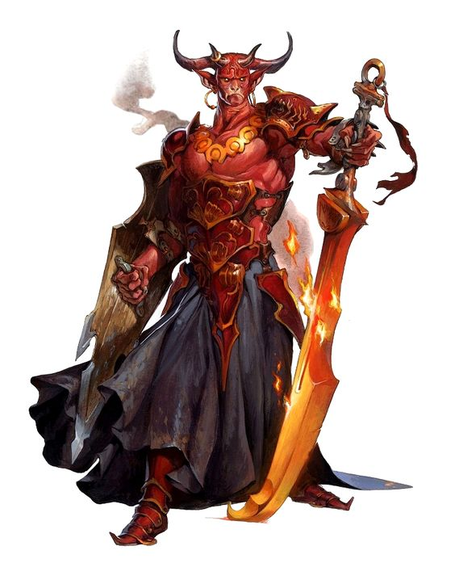
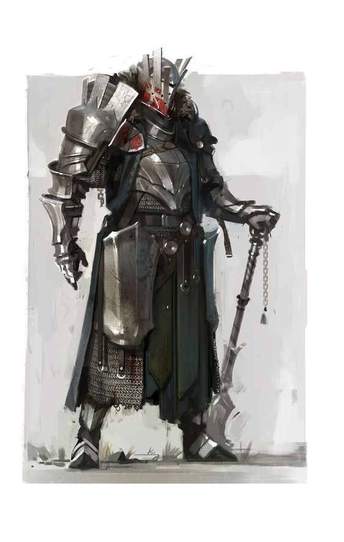
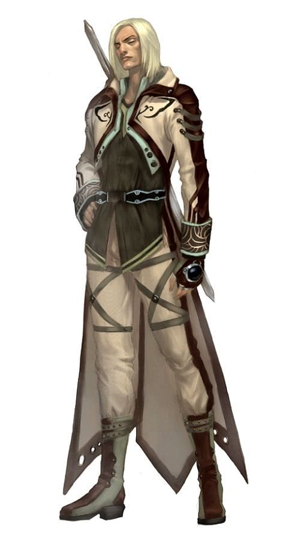
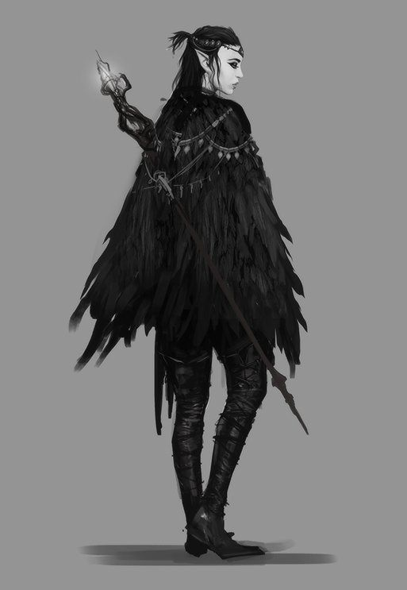
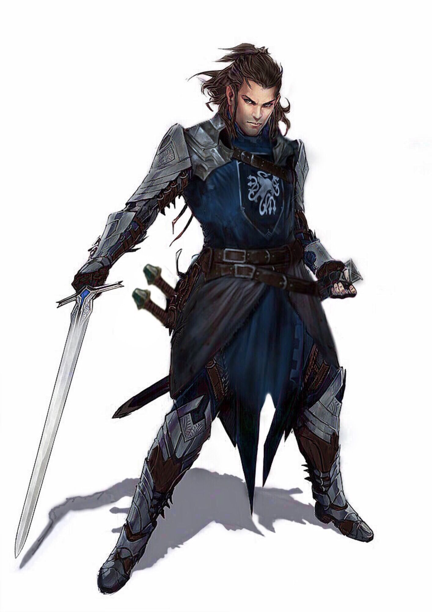
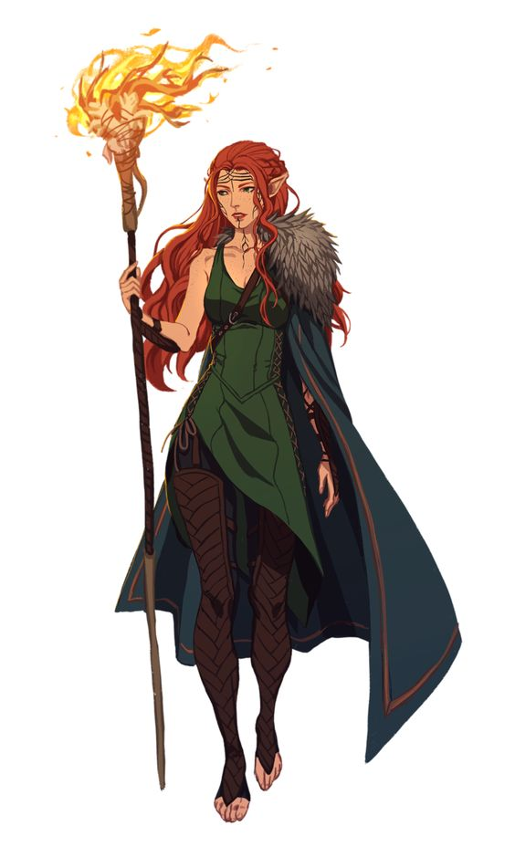
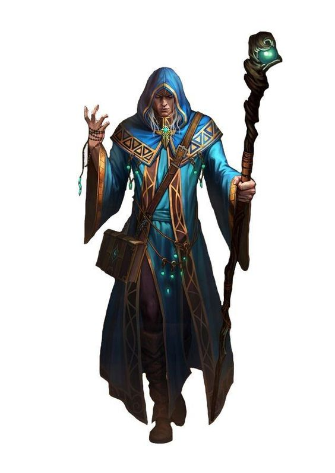

Dungeons & Dragons
I was always curious about this game, but had no one that would like to play it. Some time ago I gathered people I know over discord and we started my homebrew campaign called New Gods.
Population of Ciril (continent) knows them as The Seven. Thanks to their feats during their stay in this world, Ao (overgod) granted them godhood. With Surtur as their leader, The Seven confronted evil and spread the good all over the continent. But like in the real world, not everything is so beautiful. The Seven is actually The Six who tried to prevent Surtur from becoming a god.
Called the victorious god, who won't lose to anyone, is actually a fraudster who has managed to fool the whole world. Surtur is the antagonist of the whole campaign. He was sealed by The Six, but they had to be sealed right with him, for it to work. True followers of Surtur are trying to bring their master back, to do it, they have to collect all of his artifacts, that are scattered around the world. Surtur is a red skinned tiefling, his hallmark are his spread out horns. From a young age he was persecuted by humans, at those times racism was the norm in a continent of Ciril, but that didn't bother him at all, he was happily living with his parents in a house isolated from a village. Unfortunately this did not last long when he reached the age of 16, his parents were brutally killed by the drunken royal army men, for no reason, which started his new life.
The oldest of the seven. Bhaal is always portrayed as a knight in full armor with a dark aura around him. Endowed longevity and the power of darkness by the goddess, he became the god of death. This is what the rumors say. Bhaal was in fact cursed because he rejected the advances of the aforementioned goddess. Curse granted him immortality, but also is killing everything around him. Curse didn't activate till Bhaal meet with his beloved, who died in his arms, becoming his first victim. After he learned that he was cursed, he bought full plate armor, to hide his sight from the world and started wandering with a sole purpose to find a way to kill himself.
Lightbringer as the world called him, Larcade was depicted as god of purity, he hated everything impure, almost everything. Larcade is a tall, bright-haired elf that boasted the purity of royal blood. Together with his sister, they were to be the next rulers until she met Bhaal, which changed everything. Lilith fell in love with Bhaal and thanks to her royal elf blood she didn't suffered from his curse like everyone else. Larcade accused Bhaal of corrupting his sister, he swore to Bhaal that he will help him end his life.
Considered first and last moon elf, Lilith, but that's just a stories said by common folk. Lilith fell in love with Bhaal, which changed her appearance due to effects of his curse. Her hair took on a ravenous color, her skin became pale. Apart from her appearance, nothing has changed in her, but her brother thinks otherwise. With her brother they were first characters that joined Bhaal and are considered a as the three founders of Th Seven.
Bast, the most perfect warrior that our world has seen, legends say he fought for a week without signs of fatigue. Bast is a former soldier, one of the survivors of the project Dragonborn. The project was led by the sorcerer Regnier, who in his research proved that man can be combined with a dragon, but for this purpose the dragon must give up a piece of his heart voluntarily. The person receiving the heart had to be a child exactly 5 years old, out of fifteen only three children survived the procedure and one of them was Bast. After about 20 years, Bast and the other two began to notice side effects, they began to partly turn into dragons. When Regnier noticed that, he wanted them executed, but all of them escaped. From that time Bast lost contact with remaining two and started to travel around the world, hiding, until he found Chantea.
From birth, the whole world just loved her, not only humans, every animal that met her was extremely friendly adn trustworthy to her. She was the daughter of tavern owners, where her presence guaranteed an incredibly pleasant atmosphere. She was so beautiful that in every village you could hear a bard singing in her honour, which betrayed her. A group of mercenaries invaded her town, raiding and burning everything. Chantea survived hell, every day in captivity she wanted her death. One day, she was woken up by screams, the door of the caravan in which they drove her was opened, she saw a tall man, covered in blood. Her savior was Bast, who came across the destroyed city and decided to follow the mercenaries. Despite his current appearance, Chantea immediately knew that he was the only person she could ever love, because she felt something in him that other people missed. From that moment on, they traveled together.
Smartest mortal that ever walk on this world. His pure purpose was to collect all the knowledge from every corner of the world and write it down his book, which, in spite of its small frame, fitted everything that Malar was writing into it. No one knows his past, nor is he a person who would share his past with others. He was the last member that joined to the Seven. He joined them, because they were so unique, each character had something he couldn't find anywhere else. Everyday with them he collected more data than every before. At the end of each day he wrote down in his book everything he had learned about them and what he had deduced. Malar was the one who discovered Surturs real plans.